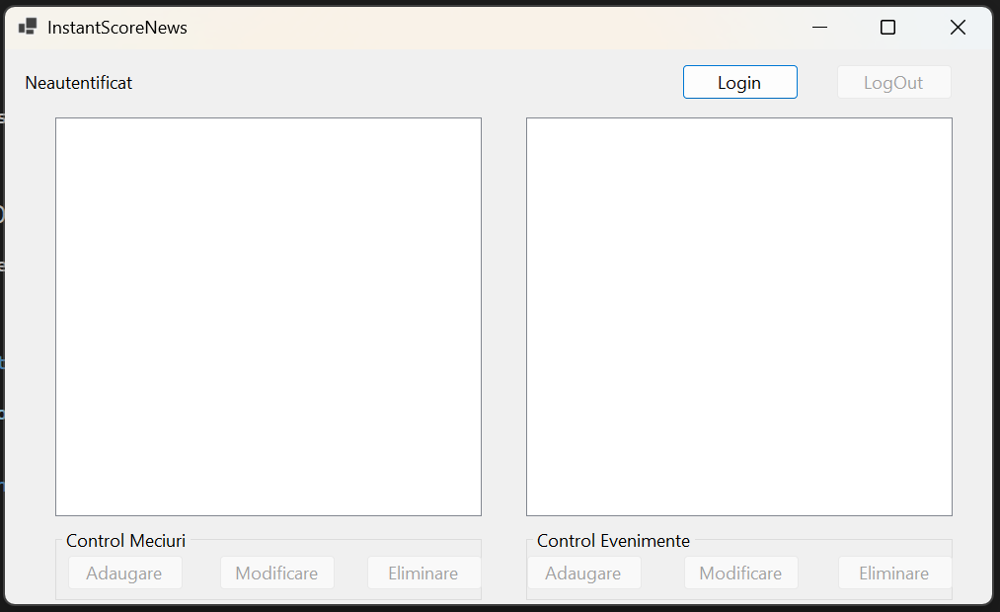
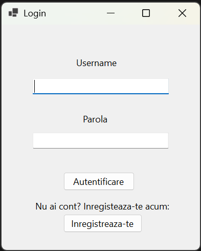

InstantScoreNews - Ghid de utilizare
Bine ai venit în aplicația InstantScoreNews! Acest ghid îți explică cum să utilizezi aplicația pentru a controla meciurile și evenimentele sportive în timp real.
Interfața principală

În fereastra principală a aplicației, sunt afișate două secțiuni principale:
- Control Meciuri – pentru gestionarea listei de meciuri (adăugare, modificare, ștergere)
- Control Evenimente – pentru gestionarea evenimentelor asociate meciurilor (ex: goluri, cartonașe, etc.)
În partea de sus, se află secțiunea de autentificare:
- Login – se folosește pentru autentificare
- LogOut – devine activ după autentificare și permite ieșirea din cont
- Statusul utilizatorului – afișează dacă ești autentificat sau nu (în exemplu: "Neautentificat")
Pentru a putea edita meciurile și evenimentele, trebuie mai întâi să te autentifici.
Autentificare
Pentru a te autentifica, urmează acești pași:

Instrucțiuni pentru accesul în sistem
Nivel de administrator
- Conectează-te introducând numele de utilizator „admin” și parola „admin” în câmpurile corespunzătoare.
- Apasă butonul Login pentru autentificare.
- După autentificarea cu succes, vei avea acces la funcționalități de administrare, inclusiv posibilitatea de a adăuga, modifica și șterge meciuri și evenimente.
Nivel de utilizator obișnuit
- Dacă ai deja un cont, conectează-te introducând datele aferente în câmpurile corespunzătoare.
- Dacă nu ai un cont, apasă butonul Înregistrează-te, completează formularul cu informațiile necesare și apasă Sign in pentru a-ți crea contul.
- Cu un cont de utilizator obișnuit, poți doar vizualiza meciurile și evenimentele, fără posibilitatea de a le edita.
- La conectare, vei primi notificări pop-up cu evenimentele adăugate în perioada în care ai fost offline.
După autentificare, statusul utilizatorului se va schimba în "Autentificat" și vei avea acces la butonul de LogOut.
Navigare
Din acest ecran poți merge la:
© 2025 InstantScoreNews - Toate drepturile rezervate.